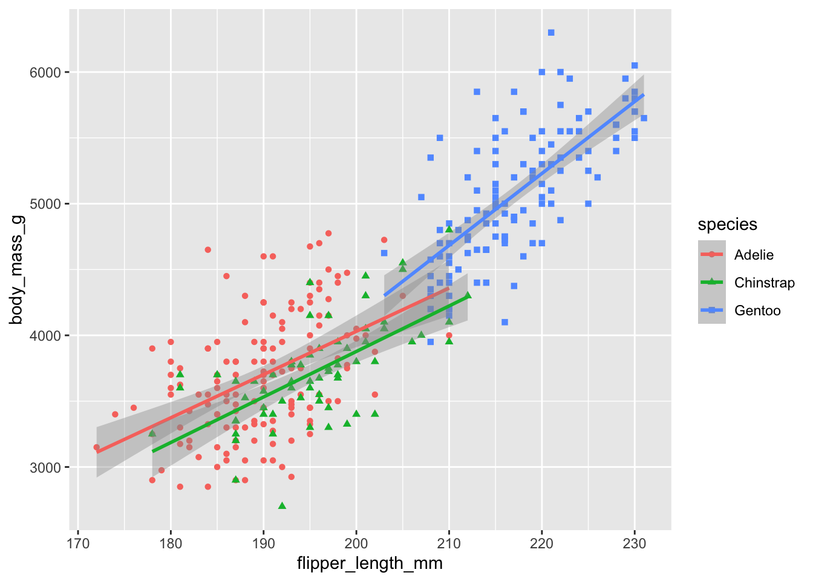
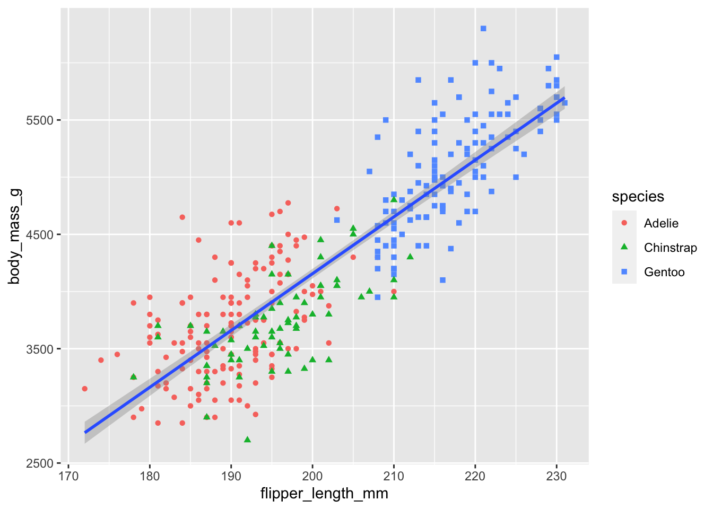
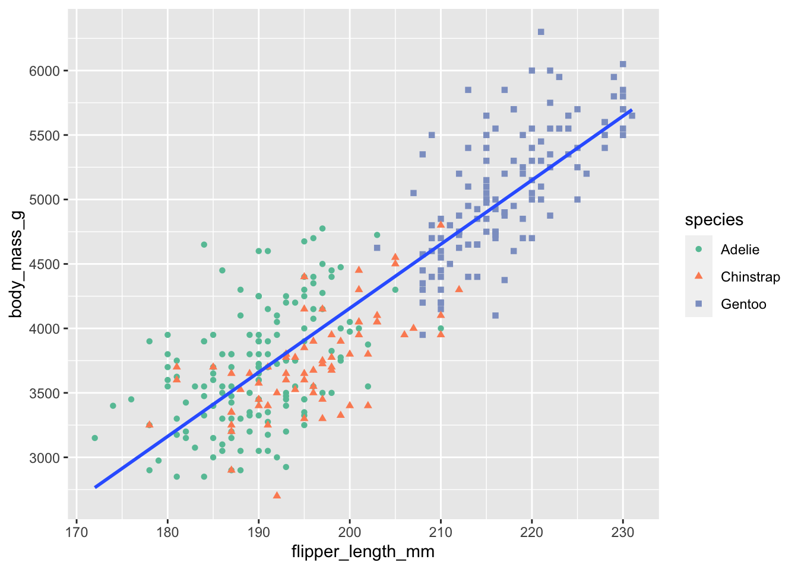
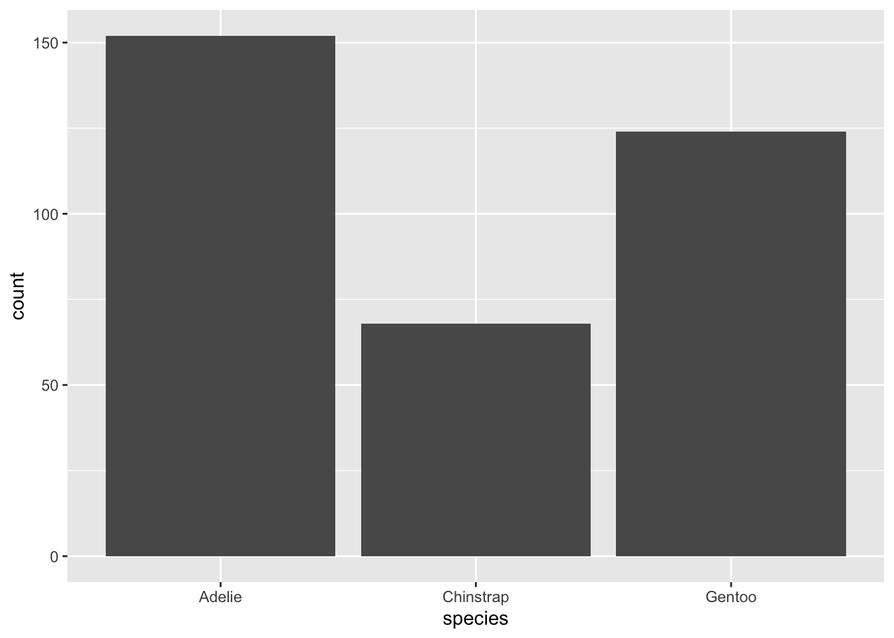
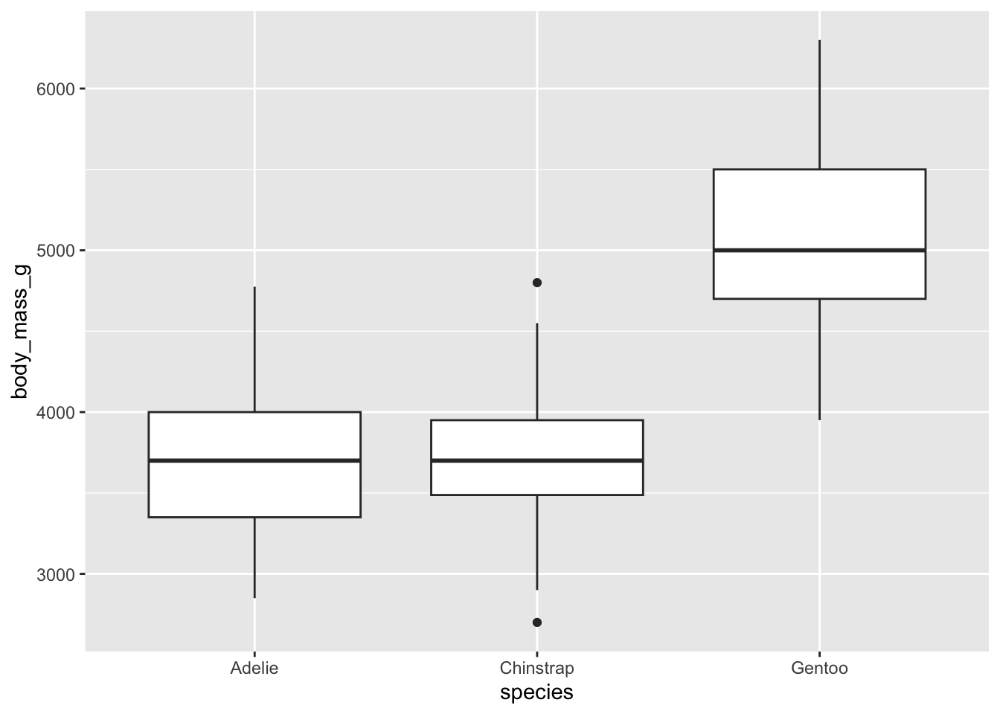

library(palmerpenguins)Plotting elegant graphs
Once we have seen what ggplot is capable of, it is now time to delve into graphics and to start understanding better the philosophy behind ggplot (and by extension of the whole tidyverse).
The Palmer Penguin data set
We are going to use the Palmer Penguin data set, which is a data set containing the size measurements for adult foraging penguins near Palmer Station, Antarctica. This data set is contained in an external package that can be installed, as usual, using the command install.packages("palmerpenguins"). To load the package, we can use now the command
Before we can start plotting graphs with this data set, let’s start by checking the data set:
penguins# A tibble: 344 × 8
species island bill_length_mm bill_depth_mm flipper_length_mm body_mass_g
<fct> <fct> <dbl> <dbl> <int> <int>
1 Adelie Torgersen 39.1 18.7 181 3750
2 Adelie Torgersen 39.5 17.4 186 3800
3 Adelie Torgersen 40.3 18 195 3250
4 Adelie Torgersen NA NA NA NA
5 Adelie Torgersen 36.7 19.3 193 3450
6 Adelie Torgersen 39.3 20.6 190 3650
7 Adelie Torgersen 38.9 17.8 181 3625
8 Adelie Torgersen 39.2 19.6 195 4675
9 Adelie Torgersen 34.1 18.1 193 3475
10 Adelie Torgersen 42 20.2 190 4250
# ℹ 334 more rows
# ℹ 2 more variables: sex <fct>, year <int>glimpse(penguins)Rows: 344
Columns: 8
$ species <fct> Adelie, Adelie, Adelie, Adelie, Adelie, Adelie, Adel…
$ island <fct> Torgersen, Torgersen, Torgersen, Torgersen, Torgerse…
$ bill_length_mm <dbl> 39.1, 39.5, 40.3, NA, 36.7, 39.3, 38.9, 39.2, 34.1, …
$ bill_depth_mm <dbl> 18.7, 17.4, 18.0, NA, 19.3, 20.6, 17.8, 19.6, 18.1, …
$ flipper_length_mm <int> 181, 186, 195, NA, 193, 190, 181, 195, 193, 190, 186…
$ body_mass_g <int> 3750, 3800, 3250, NA, 3450, 3650, 3625, 4675, 3475, …
$ sex <fct> male, female, female, NA, female, male, female, male…
$ year <int> 2007, 2007, 2007, 2007, 2007, 2007, 2007, 2007, 2007…This is a small data set, with only 344 data. Also observe that some factor variables (island, species, and sex) and that the other variables are numeric. We can also see that there are some NAs in the data set.
Before starting we also need to get a feeling of how many levels the factors have. Let’s just go for the simplest way which is using the summary() function to see this:
summary(penguins) species island bill_length_mm bill_depth_mm
Adelie :152 Biscoe :168 Min. :32.10 Min. :13.10
Chinstrap: 68 Dream :124 1st Qu.:39.23 1st Qu.:15.60
Gentoo :124 Torgersen: 52 Median :44.45 Median :17.30
Mean :43.92 Mean :17.15
3rd Qu.:48.50 3rd Qu.:18.70
Max. :59.60 Max. :21.50
NA's :2 NA's :2
flipper_length_mm body_mass_g sex year
Min. :172.0 Min. :2700 female:165 Min. :2007
1st Qu.:190.0 1st Qu.:3550 male :168 1st Qu.:2007
Median :197.0 Median :4050 NA's : 11 Median :2008
Mean :200.9 Mean :4202 Mean :2008
3rd Qu.:213.0 3rd Qu.:4750 3rd Qu.:2009
Max. :231.0 Max. :6300 Max. :2009
NA's :2 NA's :2 So overall there are three species: Adelie, Chinstrap and Gentoo, and thee islands: Biscoe, Dream and Torgersen. The sex of the penguins is balanced, and there are only 11 NAs.
Scatter plots
The first type of graph we want to learn how to do is a scatter diagram. We also want to learn how to add a regression line (line of best fit) to a scatter diagram and learn a few parameters that we may wish to change when doing scatter diagrams.
Using the penguin data set, let’s start by sketching a scatter diagram of the body mass(in g) against the flipper length (in mm). The basic code is the following:
penguins |>
ggplot(aes(x = flipper_length_mm, y = body_mass_g)) +
geom_point()Warning: Removed 2 rows containing missing values (`geom_point()`).
Notice that ggplot returns a warning that 2 rows have been removed because they contain NAs. To avoid this warning, we could remove the NAs from the two variables, using the function drop_na() from tidyr. We also want to distinguish the three species in the graph, so we want to map the species variable to another geometrical feature of the graph. For example, we could map the species to the shape of the point, like so:
penguins |>
drop_na(flipper_length_mm, body_mass_g) |>
ggplot(aes(x = flipper_length_mm, y = body_mass_g, shape = species)) +
geom_point()
However this is not fully clear and some of the points are overlapping, making the diagram even less clear. How about mapping the species to different colours? Like so:
penguins |>
drop_na(flipper_length_mm, body_mass_g) |>
ggplot(aes(x = flipper_length_mm, y = body_mass_g, colour = species)) +
geom_point()
This is way better, but can we do even better? How about both?
penguins |>
drop_na(flipper_length_mm, body_mass_g) |>
ggplot(aes(x = flipper_length_mm, y = body_mass_g,
shape = species, colour = species)) +
geom_point()
Let’s now add a line of best fit. This is done using the geom_smooth() function, to which we need to pass the method (in our case a linear model, lm, with the formula y ~ x – y is the response variable and x is the explanatory variable). Precisely
penguins |>
drop_na(flipper_length_mm, body_mass_g) |>
ggplot(aes(x = flipper_length_mm, y = body_mass_g,
shape = species, colour = species)) +
geom_point() +
geom_smooth(method = "lm", formula = "y ~ x")
This isn’t quite what we had in mind though. Why? Because passing the aesthetics shape = species and colour = species to the ggplot() function implies that these mappings are passed globally to geom_point() (as we wanted) and to geom_smooth() that interprets them as our request to draw a regression line for each group. To have one single regression line, we need to rearrange our code a little, passing the shape = species and colour = species aesthetic mappings to geom_point() so that these are interpreted locally, like so:
penguins |>
drop_na(flipper_length_mm, body_mass_g) |>
ggplot(aes(x = flipper_length_mm, y = body_mass_g)) +
geom_point(aes(shape = species, colour = species)) +
geom_smooth(method = "lm", formula = "y ~ x")
I also find the error bar around the line of best fit incredibly ugly, and often not particularly informative. To get rid of it, it suffices to pass the parameter se = FALSE to geom_smooth(), like so:
penguins |>
drop_na(flipper_length_mm, body_mass_g) |>
ggplot(aes(x = flipper_length_mm, y = body_mass_g)) +
geom_point(aes(shape = species, colour = species)) +
geom_smooth(method = "lm", formula = "y ~ x", se = FALSE)Let’s also change the colour of these points. To do this, we can use one of the scale_colour_ functions. Precisely, we are going to use the scale_colour_brewer which allows to access to several colour palettes. Some people use scale_colour_viridis_d but I find the viridis palettes to be horribly ugly, so I always steer clear from this one.
penguins |>
drop_na(flipper_length_mm, body_mass_g) |>
ggplot(aes(x = flipper_length_mm, y = body_mass_g)) +
geom_point(aes(shape = species, colour = species)) +
geom_smooth(method = "lm", formula = "y ~ x", se = FALSE) +
scale_colour_brewer(palette = "Set2")Now we wish to re-scale the y-axis to make it more accurate. This can be done using the scale_y_continuous. To use this we need to pass to the parameter breaks a sequence going from the minimal value to the maximum value and the number of breaks in this sequence.
penguins |>
drop_na(flipper_length_mm, body_mass_g) |>
ggplot(aes(x = flipper_length_mm, y = body_mass_g)) +
geom_point(aes(shape = species, colour = species)) +
geom_smooth(method = "lm", formula = "y ~ x", se = FALSE) +
scale_colour_brewer(palette = "Set2") +
scale_y_continuous(breaks = seq(1000, 8000, 500))
Finally, let’s change the labels on the axes. This can be done with the function labs(). Let’s also add a title and a subtitle.
penguins |>
drop_na(flipper_length_mm, body_mass_g) |>
ggplot(aes(x = flipper_length_mm, y = body_mass_g)) +
geom_point(aes(shape = species, colour = species)) +
geom_smooth(method = "lm", formula = "y ~ x", se = FALSE) +
scale_colour_brewer(palette = "Set2") +
scale_y_continuous(breaks = seq(1000, 8000, 500)) +
labs(
title = "Body mass and flipper length",
subtitle = "Dimensions for Adelie, Chinstrap, and Gentoo Penguins",
x = "Flipper Length (mm)", y = "Body Mass (g)",
colour = "Species", shape = "Species"
)This is a rather interesting scatter diagram, much more informative than the first attempt. This graph could now be saved and used into a presentation, or into an article, etc.
Bar charts
Let us now draw a bar chart. For example, let’s draw the frequency distribution of the species in the Penguin data set. The basic code is the following:
penguins |>
ggplot(aes(x = species)) +
geom_bar()
In bar plots as such, where the categorical variable has non-ordered levels, it is often preferable to reorder the bars based on their frequencies. We can do this using the forcats function fct_infreq(), like so:
penguins |>
ggplot(aes(x = fct_infreq(species))) +
geom_bar()
Let’s now make some changes. First of all we wish to change the colour of the bars. We don’t want to map a variable to the colour, but we only wish to change all colours. To do so, it suffices to change the fill parameter. Let’s do it locally inside geom_bar(), like so:
penguins |>
ggplot(aes(x = fct_infreq(species))) +
geom_bar(fill = "midnightblue")Let us also add some transparency. This is done using the parameter alpha which is a number that goes from 0 (total transparency) to 1 (no transparency). For example, let’s set alpha = 0.7.
penguins |>
ggplot(aes(x = fct_infreq(species))) +
geom_bar(fill = "midnightblue", alpha = 0.7)Finally, we want to change the labels and add a title to the graph. The x-axis is kind of obvious, so we don’t really need a label at all. We can pass x = NULL to tell ggplot to skip the label.
penguins |>
ggplot(aes(x = fct_infreq(species))) +
geom_bar(fill = "midnightblue", alpha = 0.7) +
labs(
title = "Distribution of species of the Palmer Penguin data set",
x = NULL, y = "Frequency"
)Note that geom_bar() only requires you to assign the x-axis because by default it calculates the frequencies of the values on the x-axis.
Histograms
Let’s now plot a histogram for the body mass of the penguins. The basic code is the following:
penguins |>
ggplot(aes(x = body_mass_g)) +
geom_histogram()`stat_bin()` using `bins = 30`. Pick better value with `binwidth`.Warning: Removed 2 rows containing non-finite values (`stat_bin()`).
Again we may wish to remove the missing values ourselves, to avoid the warning, and we may wish to change the bin width to try make a few attempts and see which one is the most informative value. Let’s try with two extremes:
penguins |>
drop_na(body_mass_g) |>
ggplot(aes(x = body_mass_g)) +
geom_histogram(binwidth = 20) penguins |>
drop_na(body_mass_g) |>
ggplot(aes(x = body_mass_g)) +
geom_histogram(binwidth = 2000)When, like in this case, it turns out that choosing a bin width may be complicated, it is quicker to opt for a fixed number of bins, like so:
penguins |>
drop_na(body_mass_g) |>
ggplot(aes(x = body_mass_g)) +
geom_histogram(bins = 20)Again, let’s change transparency and colour and let’s change the labels on the axes:
penguins |>
drop_na(body_mass_g) |>
ggplot(aes(x = body_mass_g)) +
geom_histogram(bins = 20, fill = "midnightblue", alpha = 0.7) +
labs(x = "Body Mass (g)", y = "Frequency")Density diagrams
A similar type of diagram is the density diagram.
penguins |>
drop_na(body_mass_g) |>
ggplot(aes(x = body_mass_g)) +
geom_density(colour = "midnightblue", fill = "midnightblue", alpha = 0.6)If we want to study the relationship between body mass and the species, we may wish to draw the diagram by species. This can be done passing variable species to the colour and the fill parameter. This however must be done inside the aes() function because it is an aesthetic mapping.
penguins |>
drop_na(body_mass_g) |>
ggplot(aes(x = body_mass_g)) +
geom_density(aes(colour = species, fill = species), alpha = 0.4)I find the numbers on the y-axis to be really ugly and would rather having normal numbers there. Since densities are always numbers between 0 and 1, they are very clear in percentage. Let’s use the function scales::percent to do so. Let’s also change the labels on the axes.
penguins |>
drop_na(body_mass_g) |>
ggplot(aes(x = body_mass_g)) +
geom_density(aes(colour = species, fill = species), alpha = 0.4) +
scale_y_continuous(label = scales::percent) +
labs(x = "Body Mass (g)", y = "Density")Box plots
When it comes to comparing numerical quantities, box plots can be really useful. The simplest way to build a box plot is the following:
penguins |>
drop_na(body_mass_g) |>
ggplot(aes(x = species, y = body_mass_g)) +
geom_boxplot()
Let’s make the diagram prettier by changing the colours of the boxes and by changing the label on the axes.
penguins |>
drop_na(body_mass_g) |>
ggplot(aes(x = species, y = body_mass_g,
colour = species, fill = species)) +
geom_boxplot(alpha = 0.3, show.legend = FALSE) +
labs(x = "Species", y = "Body Mass (g)")